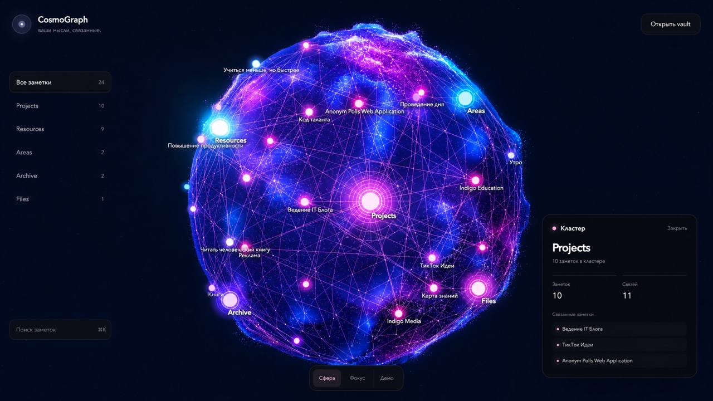

Recommended
Community Plugins
- Open Settings → Community plugins
- Select Browse, search CosmoGraph 3D
- Install, then Enable
- Open it from the ribbon orbit icon or the command palette
Obsidian community plugin — v0.2.2
Most knowledge graphs scatter notes across a flat canvas. CosmoGraph gives the vault a surface, depth and terrain: notes become luminous points on a procedural planet, wikilinks form a network across it, folders become visible clusters.
MIT licence · local-first · no account required
What it already does
Everything below ships in the current build. The renderer stays separate from the Obsidian API, so the same engine drives both the plugin view and the web prototype.
Notes sit on a bounded sphere instead of an endless canvas. Every cluster has a location, distant areas stay discoverable, and rotation gives navigation a physical rhythm.
Obsidian-style [[wikilinks]] are read straight from Markdown and drawn as a live network across the planet surface.
The structure you already maintain turns into visual gravity: each folder gathers its notes into a cluster you can filter, search and return to.
Irregular relief, craters, particles and atmosphere give the world landmarks — the kind of detail spatial memory can hold on to as a vault grows.
Drag with inertia, scroll to zoom, hover to inspect, filter by folder or search field. Select a node and the sphere rotates to bring it into view.
Create, rename, delete or relink a note and the planet follows. Open the real Markdown file straight from the details panel — CosmoGraph never edits your notes.
Why a sphere
A bounded world, not an endless canvas
Inside the view
Folder list and counts on the left, the planet in the centre, cluster details on the right. Scene mode hides the interface entirely and leaves only the world.

Folders with note counts Cluster details and links Search across the vaultNo analytics, no storage backend. Markdown is read on your device and never leaves it.
Calm for reading and orientation, Radiant when you want the world to glow.
Desktop and mobile builds both supported — the plugin is not desktop-only.
Three ways in
The stable release lives in the official Community Plugins directory. Beta builds ship through GitHub Releases, and the source always builds locally.
Recommended
Beta channel
For developers
git clone https://github.com/ n1ghtmare-dev/obsidian-cosmograph cd obsidian-cosmograph npm install npm run build:plugin
Copy main.js and manifest.json into .obsidian/plugins/cosmograph/, then restart Obsidian.
Turn it on
MIT licence · open source · built with Three.js